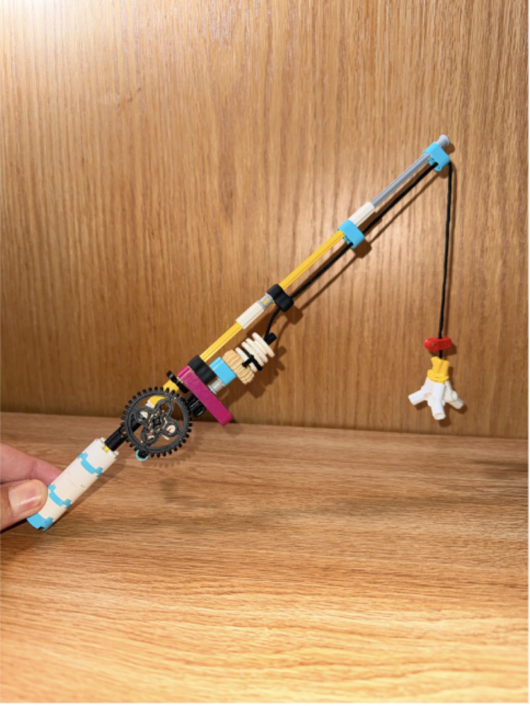

04 M — Sheet 03 / 06
Here is a LEGO Build all about me...

For this LEGO build I made a fishing rod. I have always loved going out fishing; it brings me peace. When you're fishing there is no stress on your mind. Growing up it was the thing I always wanted to be doing, and most of my "important" life decisions were made while I was fishing.
Because I was short on pieces and colors, the rod ended up in whatever was left over. It has a reel that is as functional as I could make it, a hook that is the very definition of "do what you can with what you have," and a base that looks more like wreckage than a stand.
The reel runs on a gear ratio. The crank turns a large gear, that gear drives a smaller one, and the smaller gear sits on the same axle as the barrel — so turning the crank winds the line onto the barrel.
The hard part was the constraint. We could only use the SPIKE Prime set, and none of the robotics pieces. While I was designing the reel, and especially while I was trying to fix it to the rod, I kept planning around a piece that would have worked perfectly and then finding it wasn't in the kit. The reel did not end up at the dimensions I wanted; I built what the box allowed.
With more pieces I would make the handle longer and take the reel further: a lock to stop the barrel unwinding on its own, and a way to raise and lower the barrel as it turns, so the line would lay evenly across it instead of piling up in one spot.